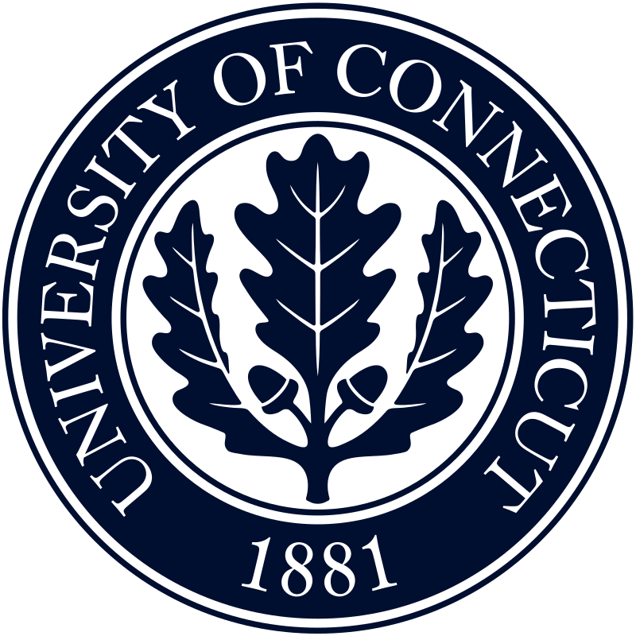

Shea van den Broek
M.Sc., Statistics, University of Connecticut
B.A., Statistics, Williams College
Williams College | Bachelor's Program
2019-2023
- Cumulative GPA: 3.9
- Two-sport athlete on Varsity Field Hockey and Lacrosse Teams
- NFHCA Scholar of Distinction 2021, 2022
- IWLCA First-Team All-Region in Lacrosse, 2022
- Relevant Courses:
- Stat Learning & Data Mining
- Regression Theory
- Data Structures & Advanced Programming
- Generalized Linear Models
- Longitudinal Data Analysis
- Statistical Inference
- Categorical Data
- Computational Linear Algebra
Williams College | Bachelor's Program
2019-2023

- Cumulative GPA: 3.7
- Athlete on Division I Varsity Lacrosse Team, 2024
- Pfizer Biostatistics Fellowship, Fall 2023 - Spring 2024
- Relevant Courses:
- Data Management & Business Process Modeling
- Linear Models
- Statistical Programming in SAS & R
- Applied Statistics
- Statistical Computing
- Design of Experiments
- Mathematical Statistics
Technical Skills
- Python
- R
- SQL
- Machine Learning
- Data Visualization
- Microsoft Suite
- Git